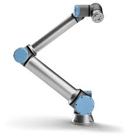

Un cobot capaz de manipular cargas de hasta 10 kg suficiente para manipular las cajas llenas de cápsulas de café. El robot las recibe a través de una cinta y las deposita en un paquete grande de 20 unidades.

Robot delta empleado en el empaquetado de las cápsulas de café, con una capacidad de carga máxima de 1 kg, será el encargado de coger las cápsulas de la cinta en movimiento y almacenarlas en paquetes de 10 unidades y dejar el paquete en la siguiente cinta del proceso.